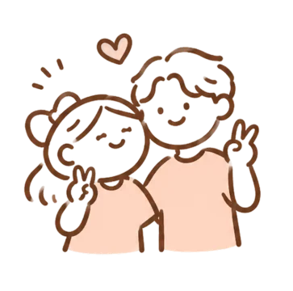
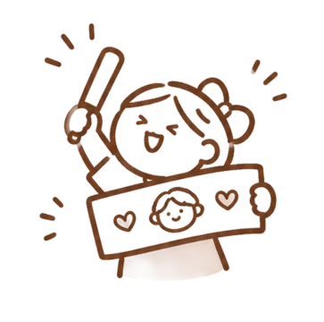
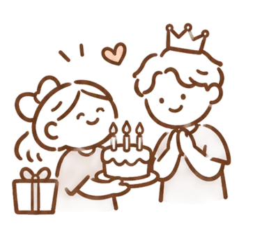
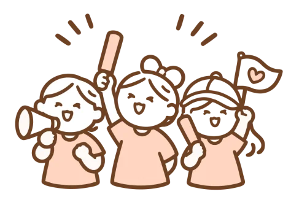

我和本命同框
把你自己也畫進去，和本命站在同一張圖裡。只屬於你的紀念插畫，也能印成小物天天帶著。
FOR EVERY STAGE

把你自己也畫進去，和本命站在同一張圖裡。只屬於你的紀念插畫，也能印成小物天天帶著。

把 Q 版本命做成應援痛衣、痛 T 或帆布包，進場前就先讓周圍的同好看見你的心意。

生日咖啡廳、應援桌、交換小物都適合，一年只有一次的日子，用手繪好好慶祝。

需要統一設計、大量製作的生日應援物或手燈套，告訴我數量和日期，我幫你估最剛好的組合。
YOUR OWN DETAILS
追星的人最懂：顏色對了、造型對了、梗對了，才是「我的」應援。
GOODS
先完成專屬插畫，再挑想做的商品。插畫電子檔 $600 起，周邊為加購印刷費。
準備中的應援小物
想先預約或大量訂製，歡迎直接 LINE 詢問報價。
HOW IT WORKS
FAQ
可以！先手繪一張專屬的 Q 版插畫，再做成應援痛衣、痛 T、帆布包、零錢包等應援小物；應援小卡、貼紙、壓克力鑰匙圈、手幅也可以先私訊詢問。應援團體需要統一的應援商品設計，也歡迎告訴我數量和活動日期。
可以！提供本命的照片和想要的造型，就能畫成檸檬手繪家風格的 Q 版插畫。作品為個人收藏與應援使用，不提供商業販售。
可以，依人數計價，和一般委託相同：1 人 $600、3 人 $1,500 起。成員較多或需要特殊舞台場景時，會另外報價。
可以！請提供應援色色碼或參考圖，以及想要的造型照片。專屬梗、手勢或小道具也歡迎一起告訴我。
可以。請透過 LINE 告訴我數量、品項與活動日期，我會依數量提供報價與交期。大量訂製建議盡早聯絡。
請先 LINE 詢問當下排單狀況。T 恤印刷可加急（+20%，約減 3 個工作天），但插畫繪製需要時間，無法保證一定趕得上，建議先私訊確認時程、提早預約。
追星應援的委託預設不公開。只有在你同意的情況下，才會放進作品集或 IG 分享。